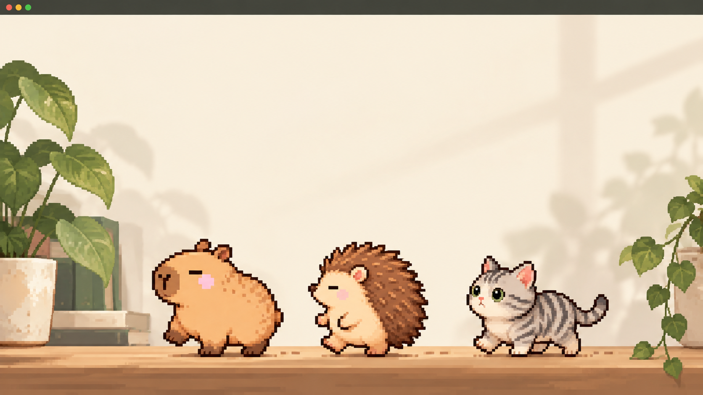
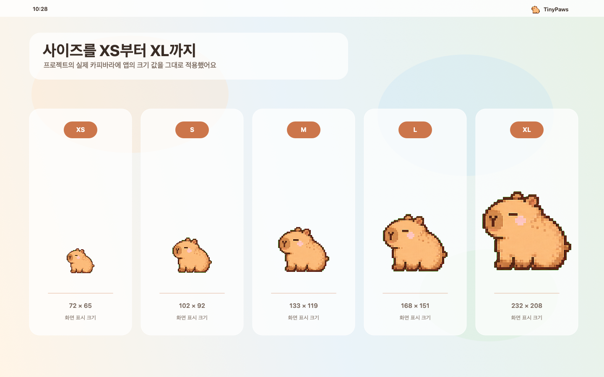
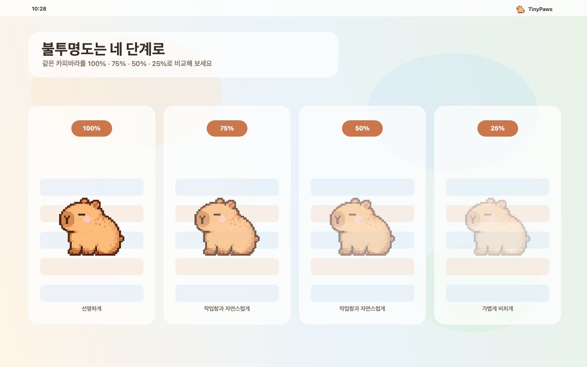
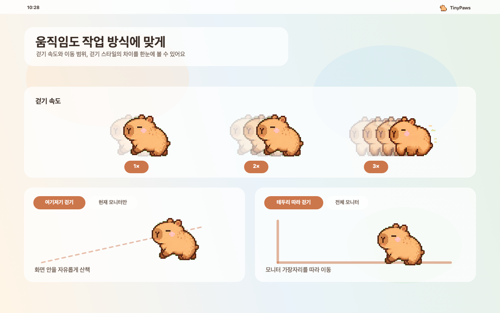

A tiny system check
친구를 톡 누르면,
Mac 상태도 살펴봐요.
캐릭터를 클릭하면 CPU와 메모리 사용량을 작은 말풍선으로 빠르게 확인할 수 있어요.
Made for your desktop
TinyPaws는 작업을 방해하지 않고, 원하는 방식으로 내 Mac 위에 머물러요.
Move together
화면 안을 자유롭게 걷게 하거나 모니터 테두리를 따라 걷게 할 수 있어요. 현재 화면 안에만 두거나 연결한 모든 화면으로 움직일 범위도 정할 수 있습니다.

Make it yours
메뉴 막대의 TinyPaws 아이콘에서 설정을 열고, 원하는 사용 방식에 맞춰 값을 바꿔 보세요.



A tiny system check
캐릭터를 클릭하면 CPU와 메모리 사용량을 작은 말풍선으로 빠르게 확인할 수 있어요.


A surprise for every friend
캐릭터별 전용 아이템과 모든 친구가 함께 쓸 수 있는 선글라스로 분위기를 바꿀 수 있어요.
보안 입력 중Gentle privacy mode
비밀번호 입력창에 키인을 하는 동안 TinyPaws는 움직임과 애니메이션을 멈춥니다. 입력칸을 벗어나면 다시 평소처럼 움직여요.